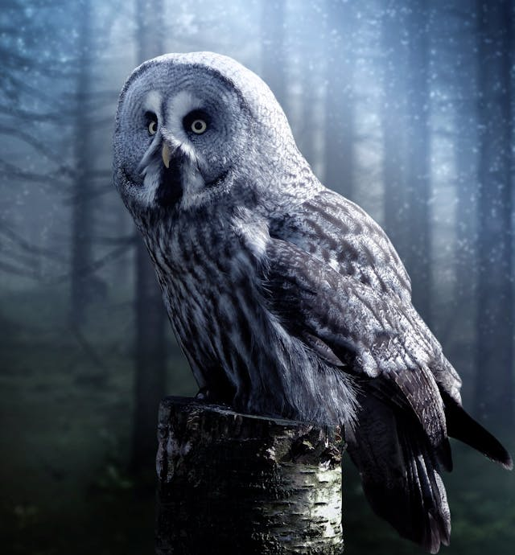

Eagles have excellent vision and are stealthy hunters. An eagles diet consists of rodents, fish, and small mammals.
Eagle info
Eagle Doc

The Owl feeds mostly on rodents and insects and are nocturnal. They hunt in silence as it has been documented they they fly in silence due to their feathers.
Owl info
Owl Doc
Falcons are the fastest animal oin the world! They hunt from above by diving and knocking their prey unconcious!
Falcon info
Falcon doc
Index
About
List-Group
Grid